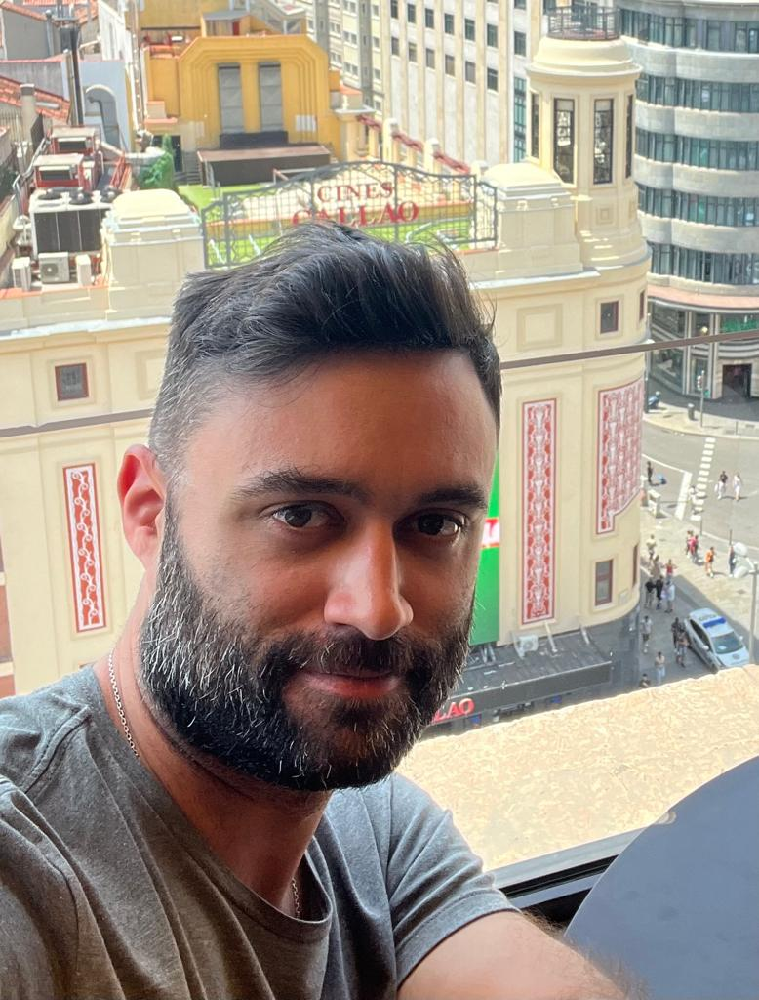

Matias Joaquín Dominguez

Summary
Civil Engineer with more than 10 years of experience looking to make a transition to IT career paths. I consider myself a responsible and flexible person, with a good capacity for learning and tolerance for working under pressure. In these years working with both employees and clients, I have developed tools to manage good interpersonal relationships.
Education
- Civil Engineer. University: “Universidad Nacional del Sur”. Bahía Blanca, Buenos Aires,
Argentina. (2006-2012)
Work experience
Freelancing - Balkan
December 2019 - Today
- Architecture and construction services.
- Project and construction management.
- Building supervision and monitoring.
Civil Engineer - Arcemac S.R.L.
September 2015 - December 2019
- Managing, designing, developing and creating apartments construction projects.
- Project management duties (e.g. managing budgets, resources, and deadlines; acquiring and compiling quotes, etc.).
- Monitoring project progress on site, supervising and ensuring it meets legal, health and safety requirements
Junior Civil Engineer - Bahia Urbana S.A.
July 2013 - September 2015
- Design and calculation of gas distribution projects for apartments buildings.
- Comply with guidelines and regulations including permits and technical documentation.
Technical Support - Nelli and Fenizi S.R.L.
February 2013 - June 2013
- Estimate materials, equipment, and labor needed to determine project costs.
- Monitor project progress and ensures design specifications standards are met.
Skills
- AutoCAD
- SketchUp
- Microsoft Project
- HTML
Languages
- Spanish - Native
- English - C1
Other